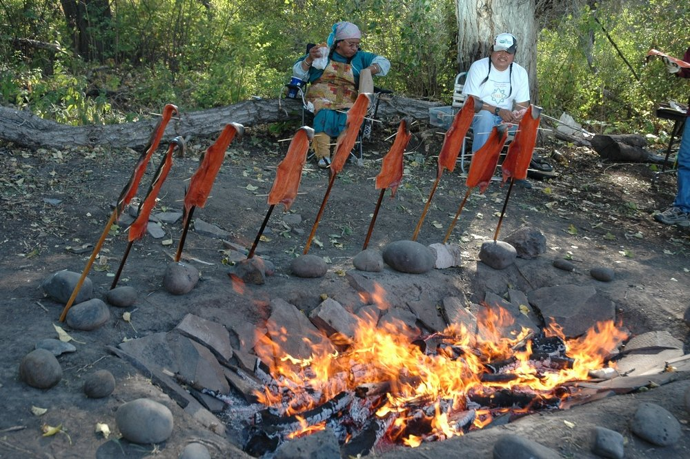
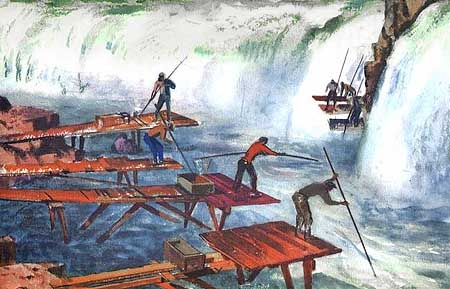
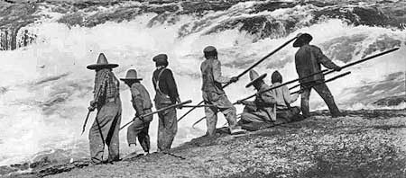
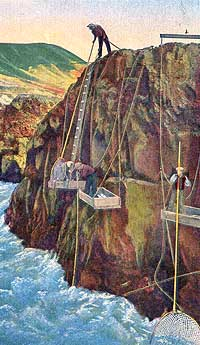
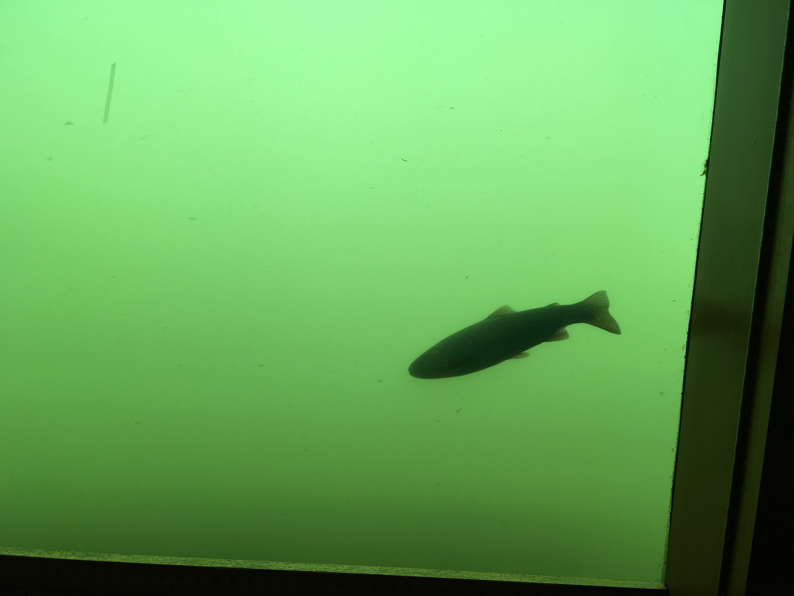
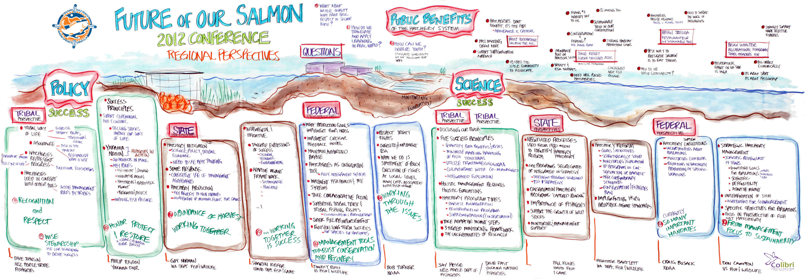
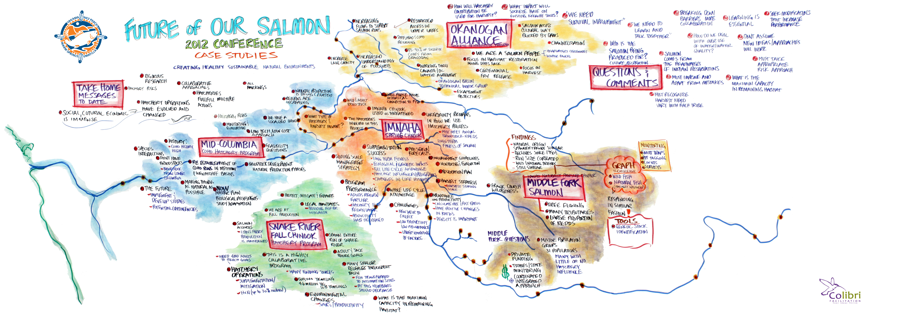
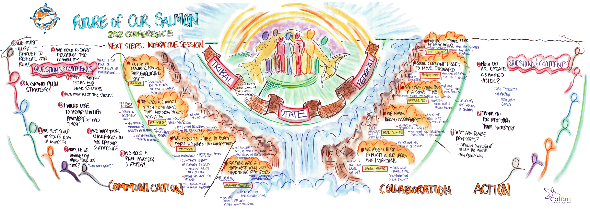

Countries and States(Provinces): Canada| British Columbia; The United States| Idaho, Oregon, Washington, Montana, Nevada, Utah, and Wyoming
Coverage: 668,000 sq kilomete or 258,000 sq mile
Type of Environment: alpine and subalpine environments, montane forests, lava fields, semiarid grasslands, and low-elevation rainforests
Dam: 60 dams in the watershed with 14 on the main stream
Challenge: planning and management
Issue: hydroelectric dams, environment, and Native American culture
Major Events
Source:Columbia River Inter-Tribal Fish Commission
Contact Me
Yingqi Tang | Oregon State University
Geography M.S. Candidate
Email: tangy@oregonstate.edu
Location: Covallis, Oregon
River History
Map Source:USGS, StreamNet
Economic projects, such as dams for hydropower development, is a popular choice among countries with abundant water resources. When the United States faced the Great Depression at the 1930s, constructing dams on Columbia River fulfilled the need for employment. It completed two dams, the Bonneville Dam and Grand Coulee Dam. Later, more dams have been built on the basin.
In 1948, Vanport city was dramatically destroyed at 4:05 p.m. on May 30, 1948, when a 200-foot (61 m) section of the dike holding back the Columbia River collapsed during a flood, killing 15. The city was underwater by nightfall leaving its inhabitants homeless.
Canada agreed to build three dams with 15.5 million acre feet (maf) of storage and coordinate the operation of these new storage facilities with the U.S. hydroelectric power supply system in order to optimize hydroelectric power production and to provide flood control. The effect of these storage reservoirs is to move the annual flooding from the downriver areas to the upper Columbia Basin.
Canada guaranteed 8.45 maf (increased later to 8.95 maf) of flood control space in the three reservoirs to reduce flooding risks in the U.S. Additional storage space is “on call” in the Canadian reservoirs to help control large floods in the U.S.
Canada is entitled to 50% (Canadian Entitlement) of the additional power generated in the U.S. because of the new Canadian storage (additional power generated is “downstream benefits”).
-->
Canada sold the first 30 years of the Canadian Entitlement to a U.S. consortium for almost $254 million. The U.S. now delivers the Canadian Entitlement to BC in both energy (approximately 500 average megawatts) and peak capacity (approximately 1,200 megawatts). BC largely sells this power on the Westwide wholesale power market, annual value of $150 million to $300 million depending on power prices.
The U.S. was allowed to build Libby Dam, with 5 maf of storage, with 42 miles of the 90-mile long reservoir backing up into Canada. Each country keeps the downstream flood control and power benefits from Libby realized in their country. Termination of the Treaty does not affect the Libby authorization.
The U.S. paid Canada almost $65 million in the 1960s for the flood control benefits from the Canadian projects, representing 50% of the estimated value of the flood control losses avoided in the U.S. from 1968 through September 2024.
-->
After September 2024, if there are no changes to the Treaty, Canada’s obligation to guarantee 8.95 maf of flood control space to the U.S. expires. This is replaced in the Treaty by an obligation on the part of Canada to provide flood control when “called-upon” in years when the U.S. cannot effectively manage flood risk with the use of its own projects, with the U.S. paying the costs of the operation. In any event, the U.S. will incur additional costs and obligations in order to receive flood control benefits from Canada.
The construction and operation of the Treaty storage dams has had an adverse effect on the fish and wildlife, riparian, water quality, and cultural resources of the Columbia River, effects and values not recognized or addressed in any formal way in the Treaty. Effective Use and Called Upon operations are likely to result in even greater adverse effects on resident and anadromous fish populations, wildlife and cultural resources. If the Treaty is not modernized, there will be significant additional adverse effects on ecosystem function and the spring freshet available for resident and migratory fish and other species will be dramatically reduced.
Under the terms of the Treaty, in order to “call upon” Canada to provide flood control storage after September 2024, the U.S. will first have to operate its reservoirs for “effective use” for flood control. Under this scenario, federal projects, such as Grand Coulee, Dworshak, Brownlee, Libby, Hungry Horse, and other storage reservoirs in the Columbia Basin, may need to operate at much lower elevations in January through May to make room for the spring runoff.
If the Treaty is not terminated or modernized, the U.S. will remain obligated to return the Canadian Entitlement, the Canadian share of the downstream power benefits.
In developing this coordinated system operation under the Treaty with Canada, the U.S. did not consult with the tribes nor consider the effect of the Treaty on the tribes’ cultural and natural resources. Not only were the tribes not consulted during the Treaty’s negotiation, the tribes have also been excluded from its governance and implementation. The Treaty does not specifically allow for considerations of critical tribal cultural resources. The coordinated power and flood control system created under the Treaty degraded multiple ecosystem functions of rivers, First Foods, natural resources, and tribal customs and identities. The Treaty limits what can be accomplished with non-Treaty water agreements to address these issues and meet tribal resource priorities.
Neither the development nor the implementation of the Treaty have involved the people and communities of the Columbia River Basin in any significant degree. Yet river management decisions under the domestic law and policy of both nations include a high degree of public engagement and involvement. Developing and implementing a modernized Treaty will have to accommodate this change in some fashion.
(Text source from Columbia River Inter-Tribal Fish Commission)
Fifteen tribes locate in the Columbia River Basin. Tribal communities face the problem of high unemployment and poverty. Salmon is a significant economic activity for Native American. Also, Salmon are part of the tribes’ spiritual and culture identity. For many tribes’ members in the Basin area, they still prefer fishing for livelihood.
First Food -- Salmon are one of the traditional “First Foods” that are honored at tribal ceremonies. The other First Foods are wild game, roots, berries, and pure water.

A traditional salmon bake outside the Museum at Warm Springs
Source:Terry Richard/The Oregonian

1930s painting of Indians fishing at Celilo Falls, as they had for thousands of years prior to white settlement of the Oregon Country.
Source:WyEast Blog

Indians fishing Celilo Falls with dip nets in the early 1900s, prior to construction of dams at Bonneville and The Dalles.
Source:WyEast Blog

1930s rendering of Indian fisherman working the narrows below Celilo Falls
Source:WyEast Blog
Besides the impacts from the 1964 treaty, climate change is another significant factor to treat the river health and the tribal community. In the treaty review section, climate adaptation plan is a new factor to consider and a way to ensure to match the tribal interests.
The Columbia River mainstream has fourteen dams in total. Between the deep gorges, the significant elevation gradient provides prime conditions for salmon survival and reproduction. The great slope also offers excellent conditions for hydropower projects. However, the construction of hydropower dams affects the salmon population in the mainstream and Snake River tributary. Dams alter salmon’s migration routes and speeds. Even though fish ladders beside dams can provide a way back upstream, adult salmon need to navigate around to find the path

A lonely fish
Source:Yingqi Tang
Four Dams in Lower Snake River
--water security? food security? energy security? cultrue spirit?
Bonneville Power Administration(BPA): Clean, flexible and reliable. The lower Snake River dams are part of a Northwest energy solution with the capability to generate over 3,000 megawatts of carbon-free power.
What if the lower Snake River dams were breached? BPA answer(2016 report):1)Cost to breach the dams: $1.3 billion to $2.6 billion. 2). Cost to replace lower Snake River dams’ capacity and energy while maintaining system reliability with natural gas: $274 million to $372 million per year 3).Increase in CO2
emissions: 2.0 to 2.6 million metric tons — every year. 4.Social cost of carbon: $98 million to $381 million — every year. 5).Cost to replace the winter critical energy with solar energy: $7.4 billion 6).Amount of solar capacity required to replace theenergy of the dams: 5,311 MW.13 (There is 25,000MW of solar generation installed in the U.S. today 7).“Given the difficulty of reducing CO2 emissions,
discarding existing CO2-free power sources has to be considered counterproductive.” —NW Power and Conservation Council.
Save Our Wild Salmon: In 1855, Natives Peoples of the Northwest signed a treaty with the United States government that ceded most of their lands - lands which currently make up much of Washington, Idaho, and Oregon - in return for the right to have and to fish for salmon and steelhead in their usual and accustomed places. The salmon were, and continue to be, so important to these peoples that their governments were willing to give up the rights they had to large tracks of land in order to ensure that salmon graced the waters of this region forever. The United States’ obligation was simply to ensure that it did not do anything to cause the decline of these fish or to stop the tribal nations from fishing.
The United States has largely failed in its obligation. Thirteen species of salmon and steelhead are listed for protection under the federal Endangered Species Act and many more have already been lost from this planet, many of which were extremely important to tribal cultures. The federal dams on the Columbia and Snake rivers in the Pacific Northwest are a major factor in the decline of these fish and yet the federal government continues to minimize the harm caused by these dams.
While Snake River dam removal would not completely solve the tribal treaty right issues to date, this action would go a long way in helping to restore Snake River salmon to levels necessary to meeting treaty right obligations. Without this action, it is difficult to fathom the suite of actions that would indeed meet these same obligations.
Map source:Transboundary Water Database from Dr. Aaron Wolf | Oregon State University
Cooperation of the Columbia River Basin from all stakeholders is necessary for climate change adaption, flood control, and the sustainable economic growth. Since Native America has a long history to understand the water, taking their opinion into the treaty review process opens an opportunity to indigenous people to develop their shared resources, and reduce conflicts for future water management.
If the treaty does not terminate, the U.S. will continue its obligation to pay Canada. Canada will remain its duty of flood control. Nonetheless, the treaty signed 53 years ago, if we do not modernize the treaty with proper adjustment and consider new conditions of water management, there will be more significant negative impacts on the ecosystem, salmon population, and tribal economy and culture. Termination of the treaty would affect flood control on the massive river, hydropower dam operation, electricity rates, water flows, irrigation system, and fishing
Source:Columbia River Inter-Tribal Fish Commission

Graphic Recording Poster2
Source:Columbia River Inter-Tribal Fish Commission

Graphic Recording Poster3
Source:Columbia River Inter-Tribal Fish Commission

Graphic Recording Poster4
Source:Columbia River Inter-Tribal Fish Commission
--Take Away--
1). Indigenous people matter and should provide an opportunity for them to speak up.
2). Water management plan should adjust base on the change of society and ecosystem.
3). Transboundary water management is a challenge but also a chance to develop a sustainable and healthy river system.
4). Treaties are a way to regulate stakeholder’s obligations and provide benefits, but should consider long-term effects of any river channel modification.
5). Negative impacts from the dam are evident. Dam with small power capacity can be removed for river restoration